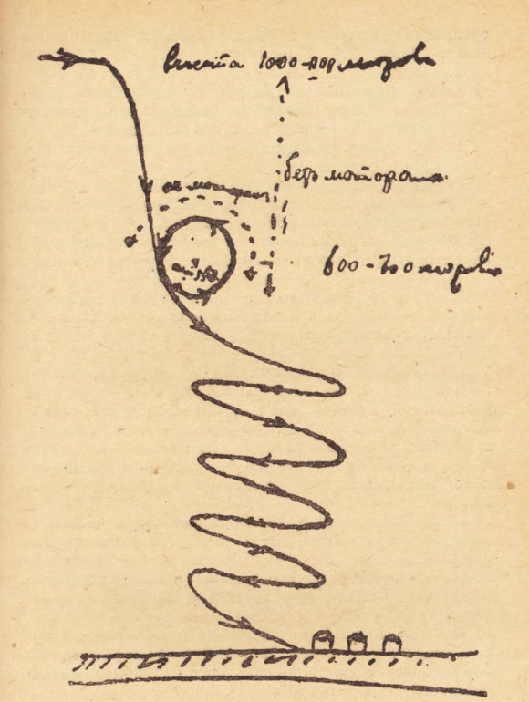

От нижегородского планера — к кругу в небе над Киевом
Читается подряд. Нажми на удар — откроется подробный разбор с источниками.
Пётр Нестеров родился в Нижнем Новгороде 15 февраля 1887 года по старому стилю, учился в кадетском корпусе и в Михайловском артиллерийском училище.Узнать подробнееСвернуть
С 1906 по 1909 год он служил артиллеристом во Владивостоке. Потом, в 1909–1910 годах, его прикомандировали к воздухоплавательной роте под городом.
Источник: Е. Ф. Бурче, «Пётр Николаевич Нестеров» (М.: Молодая гвардия, 1955, серия «Жизнь замечательных людей»), «Основные даты жизни и деятельности П. Н. Нестерова».
Летом 1911 года в Нижнем Новгороде Нестеров вместе с П. П. Соколовым построил планер, летал на нём и начал проектировать свой самолёт.Узнать подробнееСвернуть
Осенью того же года его зачислили в Офицерскую воздухоплавательную школу. 28 сентября 1912 года в Гатчине он сдал экзамен на пилота-авиатора, а 5 октября — на военного лётчика.
Источники: Е. Ф. Бурче, «Пётр Николаевич Нестеров» (1955), «Основные даты…»; В. П. Захаров, «Первый военный аэродром» (М.: Воениздат, 1988), глава «Асы первой мировой».
В 1912 году Нестеров защищал свой проект в воздухоплавательном комитете. Он доказывал, что поворачивать самолёт нужно с креном, а крен тогда считали опасным.Узнать подробнееСвернуть
Сам он писал так: «Против теории управления мне ничего не могли возразить, так как она была ясна, но я проповедывал крены, которые считались тогда опасными». Денег на самолёт ему не дали. Его направили учиться летать и предсказали, что тогда он свои взгляды переменит.
Источник: П. Н. Нестеров, «Как я совершил мёртвую петлю», «С.-Петербургская газета», 4 и 5 сентября 1913 года; текст — в приложении к книге Е. Ф. Бурче (1955).
Взглядов он не переменил. Нестеров был уверен: большинство аварий случается оттого, что лётчика учат «инстинктивному» управлению, — и задумал мёртвую петлю как последнее доказательство.Узнать подробнееСвернуть
Чтобы доказать свою правоту, он делал виражи с креном до 85°, нарочно сваливал самолёт на крыло и выравнивал его. Мёртвую петлю Нестеров задумал как последнее доказательство: поворот самолёта одним рулём глубины.
Источник: П. Н. Нестеров, «Как я совершил мёртвую петлю», «С.-Петербургская газета», 4 и 5 сентября 1913 года (по приложению к книге Е. Ф. Бурче, 1955).
Весной 1913 года Нестеров принял XI корпусной авиационный отряд в Киеве, а к концу лета отряд получил новый «Ньюпор» сборки московского завода «Дукс».Узнать подробнееСвернуть
Исполнять обязанности начальника отряда он начал 26 апреля 1913 года. Петлю он откладывал, пока ждал новый аппарат, «который я мог бы по-своему урегулировать», и налетал на нём не больше 10 часов.
Источники: Е. Ф. Бурче, «Пётр Николаевич Нестеров» (1955), «Основные даты…» и гл. VI; П. Н. Нестеров, «Как я совершил мёртвую петлю» (1913).
27 августа 1913 года, вечером, Нестеров привязался ремнём к сиденью, поднялся на 1000 метров, закрыл бензин и пошёл вниз почти отвесно.Узнать подробнееСвернуть
Примерно на 600 метрах он начал выравнивать самолёт, а когда нос прошёл горизонт, снова открыл бензин. «Мотор очень хорошо заработал, аппарат полез в небо и начал ложиться на спину». Левую руку Нестеров всё время держал на бензиновом кране.

Схема мёртвой петли, нарисованная рукой Нестерова в 1913 году: подписи «высота 1000–900 метров», «без мотора», «с мотором», «600–700 метров». Ниже — спиральный спуск к ангарам. Репродукция из книги, Викисклад, общественное достояние. Источники: П. Н. Нестеров, «Как я совершил мёртвую петлю» (1913); В. П. Захаров, «Первый военный аэродром» (1988), глава «Асы первой мировой» — о собственноручной схеме с расчётной высотой.
Анероид, прибор для измерения высоты, Нестеров оставил в кармане куртки нарочно: если петля выйдет неправильной, вверх ногами он выпадет. Анероид не выпал.Узнать подробнееСвернуть
«Но... я решил „рискнуть“ им для большей убедительности. Вот, собственно говоря, все, чем я рискнул, т. е. на 13 руб. 50 коп. казенным имуществом». Анероид не выпал. Инструменты в открытых ящиках остались на местах, бензин и масло прижимало ко дну бака — то есть кверху, — и мотор работал всю верхнюю половину петли.
Источник: П. Н. Нестеров, «Как я совершил мёртвую петлю», «С.-Петербургская газета», 4 и 5 сентября 1913 года (по приложению к книге Е. Ф. Бурче, 1955).
В тот же вечер полёт записали в протокол. Весь поворот в вертикальной плоскости «проведен без перегибов плавной кривой в течение 6–8 секунд».Узнать подробнееСвернуть
Протокол подписали командир 3-й авиационной роты подполковник Боресков, спортивный комиссар Императорского Всероссийского аэроклуба штабс-капитан Орлов и военный лётчик поручик Есипов. В Петербург ушла телеграмма за подписями десяти свидетелей: Нестеров «описал полный круг в вертикальной плоскости, после чего спланировал к ангарам».
«27 Августа 1913 г., в шесть часов десять минут вечера поручик Нестеров, поднявшись на ньюпоре на высоту 1000 метров, остановив мотор, начал планировать почти вертикально вниз. На высоте 600–800 метров от поверхности земли летчик включил мотор, выровнял рулем глубины аэроплан, поставил его носом кверху, повернул на спину и, опять переведя в вертикальное положение носом вниз и замкнув таким образом кривую в вертикальной плоскости, выключил мотор и нормальным планирующим спуском аттерировал на стартовой площадке того же Сырецкого военного аэродрома».
Источники: протокол 27 августа 1913 года и телеграмма свидетелей — по книге Е. Ф. Бурче (1955), приложение и гл. VI; телеграмма — также В. П. Захаров, «Первый военный аэродром» (1988).
Начальство приняло петлю холодно. Профессор полковник Найденов предлагал в газете, «поблагодарив за храбрость», посадить Нестерова на 30 суток под арест, а 31 августа 1913 года его произвели в штабс-капитаны.Узнать подробнееСвернуть
Генерал Шишкевич из Генерального штаба заявил в печати, что такие опыты военных лётчиков «бесполезны». В газетах писали, что он «рисковал собой и казенным аппаратом без разрешения начальства». Нестеров ответил в своей статье: за ним ни в школе, ни в отряде не числится ни одной поломки, «если не считать недавнюю поломку кромки крыла при встрече на земле с другим аппаратом».
Источники: Е. Ф. Бурче, «Пётр Николаевич Нестеров» (1955), гл. VI и «Основные даты…»; П. Н. Нестеров, «Как я совершил мёртвую петлю» (1913).
Француз Адольф Пегу сделал петлю 21 сентября 1913 года — через 12 дней после Нестерова, чей полёт по новому стилю пришёлся на 9 сентября. Ещё раньше, 2 сентября, Пегу пролетел частью вниз головой, но его фигура была похожа на букву S, а не на замкнутый круг.Узнать подробнееСвернуть
Нестеров сам объяснил разницу: в его петле центробежная сила прижимала лётчика к сиденью, а у Пегу центробежная сила «выбрасывала его из аппарата», бензин вытекал, и мотор работать не мог. 13 мая 1914 года, когда в газетах первую петлю стали приписывать французу, Совет Киевского общества воздухоплавания постановил огласить даты полётов Пегу.
Источники: письмо Совета Киевского общества воздухоплавания (13 мая 1914) и П. Н. Нестеров, «Как я совершил мёртвую петлю» (1913) — по книге Е. Ф. Бурче (1955), гл. VI и приложение; В. П. Захаров, «Первый военный аэродром» (1988).
26 ноября 1913 года Киевское общество воздухоплавания наградило Нестерова золотой медалью — «за первое в мире удачное решение, с риском для жизни, вопроса об управлении аэропланами при вертикальных кренах».Узнать подробнееСвернуть
Научно-технический комитет общества написал в отзыве: до полёта Нестерова вопрос об управлении самолётом в вертикальных положениях «оставался открытым; многие даже сомневались в возможности решения его». 14 мая 1914 года в Политехническом музее в Москве Нестеров выступил с докладом о своей петле. Его биограф Е. Ф. Бурче пишет, что на этом заседании Пегу публично признал его первенство.
Источники: свидетельство Киевского общества воздухоплавания и отзыв его Научно-технического комитета — приложение к книге Е. Ф. Бурче (1955); там же «Основные даты…»; В. П. Захаров, «Первый военный аэродром» (1988).
26 августа 1914 года, на фронте под Львовом, Нестеров первым в истории сбил вражеский самолёт тараном и сам погиб.Узнать подробнееСвернуть
По акту расследования, он давно говорил, что можно сбить неприятельский аппарат ударом сверху колёсами своего самолёта и остаться в живых. Его «Моран» врезался мотором в австрийский «Альбатрос»; Нестеров выпал из самолёта и погиб. Похоронили Нестерова в Киеве, на Аскольдовой могиле. Петлю, которую он сделал первым, называют его именем.
Источники: «Акт расследования по обстоятельствам геройской кончины начальника XI корпусного авиационного отряда штабс-капитана Нестерова» и «Основные даты…» — по книге Е. Ф. Бурче (1955); Центральный музей ВВС, «В 1913 году П. Н. Нестеров впервые выполнил мёртвую петлю».